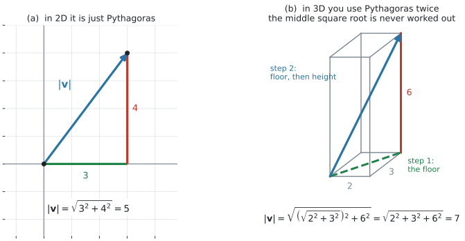
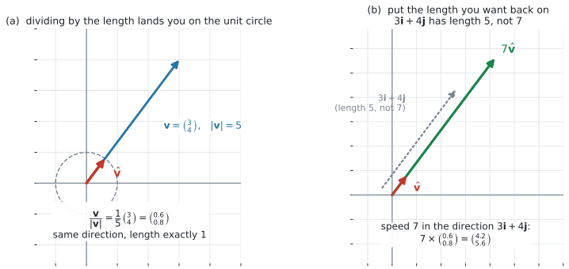

AHL 3.10b — Magnitude, position and unit vectors（大きさ・位置ベクトル・単位ベクトル）
- ベクトルの magnitude（大きさ）\(\lvert \mathbf{v} \rvert\) を、成分から求められる。
- \(3\) 次元でも、成分が \(1\) つ増えるだけで同じ計算ができる。
- position vector（位置ベクトル）\(\overrightarrow{OA} = \mathbf{a}\) の意味が言える。
- \(\overrightarrow{AB} = \mathbf{b}-\mathbf{a}\) を使って、\(2\) 点を結ぶベクトルと\(2\) 点間の距離を求められる。
- unit vector（単位ベクトル）\(\dfrac{\mathbf{v}}{\lvert \mathbf{v} \rvert}\) を作れる（normalize、正規化）。
- 「速さ \(7\) で \(3\mathbf{i}+4\mathbf{j}\) の向き」のような指定から、速度ベクトルを作れる（rescale、長さの付け替え）。
- resultant の大きさと向きを求め、方位で答えられる。
- \(\lvert k\mathbf{v} \rvert = \lvert k \rvert \lvert \mathbf{v} \rvert\) を使える。
\(1\) 行だけです。 それが、このページの中心にある式です。
\[ \lvert \mathbf{v} \rvert = \sqrt{v_1^{\,2} + v_2^{\,2} + v_3^{\,2}}, \qquad \mathbf{v} = \begin{pmatrix} v_1 \\ v_2 \\ v_3 \end{pmatrix} \tag{1}\]
式 1 は試験中に見られます。暗記は問われません。 ただ、\(2\) 次元のときにどう書くのか（第1節）、なぜこの形なのか（第1節）は、自分で言えるようにしておいてください。
単位ベクトルの式 \(\dfrac{\mathbf{v}}{\lvert \mathbf{v} \rvert}\) は、公式集にありません。 シラバスの Guidance には書かれていますが、公式集の欄には出てきません。
The idea
1. 大きさは、三平方の定理です
ベクトルの magnitude（大きさ）は、矢印の長さです。\(\lvert \mathbf{v} \rvert\) と書きます。

図 1 の (a) を見てください。\(\mathbf{v} = \begin{pmatrix} 3 \\ 4 \end{pmatrix}\) の矢印は、横に \(3\)、たてに \(4\) の直角三角形の斜辺です。ですから
\[ \lvert \mathbf{v} \rvert = \sqrt{v_1^{\,2} + v_2^{\,2}} \tag{2}\]
\[ \lvert \mathbf{v} \rvert = \sqrt{3^2+4^2} = \sqrt{25} = 5 \]
大きさを出すときは、成分の符号を気にしなくてかまいません。 \(2\) 乗すると消えるからです。\(\begin{pmatrix} -3 \\ 4 \end{pmatrix}\) でも \(\begin{pmatrix} 3 \\ -4 \end{pmatrix}\) でも、長さは \(5\) です。
\(\lvert \mathbf{v} \rvert\) は数です。ベクトルではありません。太字にも下線にもしません。
\(\lvert \mathbf{v} \rvert \geq 0\) です。長さが負になることはありません。
\(\lvert \mathbf{v} \rvert = 0\) になるのは \(\mathbf{v} = \mathbf{0}\) のときだけです（AHL 3.10a 第8節）。
\(3\) 次元でも、成分が \(1\) つ増えるだけです。 図 1 の (b) は \(\mathbf{v} = \begin{pmatrix} 2 \\ 3 \\ 6 \end{pmatrix}\) を直方体の対角線として描いたものです。床の対角線で三平方の定理を \(1\) 度、それと高さでもう \(1\) 度使うと、\(\sqrt{\ }\) が \(2\) 乗で消えて、\(3\) つの \(2\) 乗がそのまま足し合わさります。
\[ \lvert \mathbf{v} \rvert = \sqrt{2^2+3^2+6^2} = \sqrt{49} = 7 \]
途中の \(\sqrt{13}\) は、計算しません。 \(2\) 次元の 式 2 は、公式集の 式 1 に \(v_3 = 0\) を入れた場合だと思ってかまいません。
2. position vector — 点をベクトルで表す
原点 \(O\) から点 \(A\) へ向かうベクトルを、点 \(A\) の position vector（位置ベクトル）といい、\(\mathbf{a}\) と書きます。
\[ A(1,\ 4) \quad \Longrightarrow \quad \mathbf{a} = \overrightarrow{OA} = \begin{pmatrix} 1 \\ 4 \end{pmatrix} \tag{3}\]
点の座標と、その点の position vector の成分は、同じ数です。
AHL 3.10a 第4節 で、ベクトルはどこに置いてもよいと書きました。position vector は、そのうち根元を原点に固定したものです。
- 点 \(A\) … 場所そのもの。動かせません
- position vector \(\mathbf{a}\) … 「原点から \(A\) までの動き方」。\(O\) を出発点と決めているので、点と \(1\) 対 \(1\) で対応します
position vector を使うと、点の話をベクトルの計算に持ち込めます。 これが便利なところで、AHL 3.11（直線）も AHL 3.12a（運動）も、ここに乗っています。
3. \(\overrightarrow{AB} = \mathbf{b}-\mathbf{a}\) — ゴールひくスタート

図 2 の (a) で、\(A\) から \(B\) へ行くには、いったん \(O\) まで戻ってから \(B\) へ出ると考えます。
\[ \overrightarrow{AB} = \overrightarrow{AO} + \overrightarrow{OB} = -\mathbf{a} + \mathbf{b} \]
つまり
\[ \overrightarrow{AB} = \mathbf{b} - \mathbf{a} \tag{4}\]
「ゴール \(-\) スタート」です。\(A(1,4)\)、\(B(7,-4)\) なら
\[ \overrightarrow{AB} = \begin{pmatrix} 7 \\ -4 \end{pmatrix} - \begin{pmatrix} 1 \\ 4 \end{pmatrix} = \begin{pmatrix} 6 \\ -8 \end{pmatrix} \]
式 4 の順序は、AHL 3.10a 第6節 の「\(\mathbf{a}-\mathbf{b}\) は \(\mathbf{b}\) の先から \(\mathbf{a}\) の先へ」と、そのまま同じ話です。
引かれるほうが行き先です。\(\overrightarrow{AB}\) のうしろの文字 \(B\) が行き先なので、\(\mathbf{b}\) が前に来ます。
\[ \overrightarrow{BA} = \mathbf{a} - \mathbf{b} = -\overrightarrow{AB} \]
逆にすると、向きが正反対になります。 長さは同じです（第4節）。
4. \(2\) 点間の距離は \(\lvert \overrightarrow{AB} \rvert\) です
図 2 の (b) を見てください。\(\overrightarrow{AB}\) の長さが、そのまま \(A\) と \(B\) の距離です。
\[ AB = \lvert \overrightarrow{AB} \rvert = \lvert \mathbf{b} - \mathbf{a} \rvert \tag{5}\]
\(A(1,4)\)、\(B(7,-4)\) なら
\[ \lvert \overrightarrow{AB} \rvert = \sqrt{6^2+(-8)^2} = \sqrt{100} = 10 \]
これは、座標で習った距離の公式と同じものです。\(\sqrt{(x_2-x_1)^2+(y_2-y_1)^2}\) の中身を、ベクトルの言葉で書き直しただけです。
距離には向きがありません。 ですから
\[ \lvert \overrightarrow{AB} \rvert = \lvert \overrightarrow{BA} \rvert \]
\(\overrightarrow{AB}\) と \(\overrightarrow{BA}\) は向きが逆のベクトルですが、長さは同じです。
| 英語 | 日本語 | 何のことか |
|---|---|---|
| magnitude of \(\mathbf{v}\) | \(\mathbf{v}\) の大きさ | \(\lvert \mathbf{v} \rvert\)。scalar |
| length of \(\mathbf{v}\) | \(\mathbf{v}\) の長さ | magnitude と同じもの |
| distance from \(A\) to \(B\) | \(A\) と \(B\) の距離 | \(\lvert \overrightarrow{AB} \rvert\)。scalar |
| speed | 速さ | 速度ベクトルの大きさ。scalar |
表 1 の右の列で、scalar と vector を見分けてください。 答えの形が変わります。
5. unit vector — 長さを \(1\) にそろえる
長さが \(1\) のベクトルを unit vector（単位ベクトル）といいます。
\(\mathbf{v} \neq \mathbf{0}\) のとき、\(\mathbf{v}\) を自分の長さで割ると、単位ベクトルになります。
\[ \hat{\mathbf{v}} = \frac{\mathbf{v}}{\lvert \mathbf{v} \rvert} \tag{6}\]
これを normalize（正規化・単位化）するといいます。

図 3 の (a) が、その様子です。\(\mathbf{v} = \begin{pmatrix} 3 \\ 4 \end{pmatrix}\) は長さ \(5\) なので
\[ \hat{\mathbf{v}} = \frac{1}{5}\begin{pmatrix} 3 \\ 4 \end{pmatrix} = \begin{pmatrix} 0.6 \\ 0.8 \end{pmatrix} \]
向きは変わりません。 \(\dfrac{1}{5}\) は正の数なので、スカラー倍として向きを保ちます（AHL 3.10a 第7節）。
長さだけが \(1\) になります。 たしかめると \(\sqrt{0.6^2+0.8^2} = \sqrt{1} = 1\) です（電卓での作り方はGDC 第3節）。
\(\lvert \mathbf{0} \rvert = 0\) なので、式 6 は \(0\) で割ることになります。
零ベクトルには向きがないので、これは当てはまらない、というだけのことです（AHL 3.10a 第8節）。\(\mathbf{v} \neq \mathbf{0}\) が 式 6 の条件です。
6. 「速さ \(7\) で、\(3\mathbf{i}+4\mathbf{j}\) の向き」
シラバスが挙げている Example です。
Example: Find the velocity of a particle with speed \(7\,\text{ms}^{-1}\) in the direction \(3\boldsymbol{i} + 4\boldsymbol{j}\).
\(3\mathbf{i}+4\mathbf{j}\) をそのまま答えにはできません。 このベクトルの長さは \(5\) で、\(7\) ではないからです。
向きだけを取り出してから、ほしい長さを掛けます。
\[ \mathbf{v} = (\text{速さ}) \times \frac{\text{向きのベクトル}}{\lvert \text{向きのベクトル} \rvert} \tag{7}\]
| ステップ | すること | この例では |
|---|---|---|
| \(1\) | 大きさを出す | \(\lvert 3\mathbf{i}+4\mathbf{j} \rvert = 5\) |
| \(2\) | 割って単位ベクトルにする | \(\dfrac{1}{5}\begin{pmatrix} 3 \\ 4 \end{pmatrix} = \begin{pmatrix} 0.6 \\ 0.8 \end{pmatrix}\) |
| \(3\) | ほしい長さを掛ける | \(7\begin{pmatrix} 0.6 \\ 0.8 \end{pmatrix} = \begin{pmatrix} 4.2 \\ 5.6 \end{pmatrix}\) |
図 3 の (b) が、その \(3\) つの手順です。答えは
\[ \mathbf{v} = 4.2\mathbf{i} + 5.6\mathbf{j} \]
検算。 長さを出し直します。\(\sqrt{4.2^2+5.6^2} = \sqrt{49} = 7\) ✓
speed は scalar、velocity は vector でした（AHL 3.10a 第1節）。この問題は、scalar と向きから vector を組み立てる問題です。
7. resultant の大きさと向き
AHL 3.10a 第5節 で、resultant は全部足したものだと書きました。そこで止めていた「大きさと向き」を、ここで出します。
\[ \begin{pmatrix} 2.5 \\ 6 \end{pmatrix} \quad \Longrightarrow \quad \text{大きさ } \sqrt{2.5^2+6^2} = 6.5 \]
向きは、角度で答えます。 東西・南北の設定なら、bearing（方位）で聞かれることが多いです。
\[ \tan\theta = \frac{\text{東向きの成分}}{\text{北向きの成分}} = \frac{2.5}{6} \quad \Longrightarrow \quad \theta = 22.6^{\circ} \]
北から東回りに \(22.6^{\circ}\) なので、方位は \(023^{\circ}\) です（例 4）。
この形がそのまま使えるのは、東向きの成分も北向きの成分も正のときです。どちらかが負のときは、\(\tan^{-1}\) が返す値をそのまま方位にはできません。図をかいて、\(000^{\circ}\) から \(360^{\circ}\) のどこに入るかを決めてください（AHL 3.12a では、負の成分がふつうに出てきます）。
8. rescale — 長さを指定して作る
シラバスの行は Rescaling and normalizing vectors. でした。\(2\) つは、表 2 のどこで止めるかの違いです。
- normalize … 長さを \(1\) にする。ステップ \(2\) まで
- rescale … 長さを指定の値にする。ステップ \(3\) まで
\(L > 0\) のとき、長さ \(L\) で \(\mathbf{v}\) の向きのベクトルは
\[ L\,\frac{\mathbf{v}}{\lvert \mathbf{v} \rvert} \qquad (\mathbf{v} \neq \mathbf{0}) \tag{8}\]
\(L\) が負なら、向きは反対になります。 そのときの長さは \(\lvert L \rvert\) です。
これは、次の性質から出てきます。
\[ \lvert k\mathbf{v} \rvert = \lvert k \rvert \, \lvert \mathbf{v} \rvert \tag{9}\]
\(\lvert k \rvert\) です。 \(k\) ではありません。 \(\sqrt{k^2} = \lvert k \rvert\) だからです。\(k\) が負のとき、\(k\lvert \mathbf{v} \rvert\) は負の数になってしまい、長さになりません。
\(3\) 次元でも、まったく同じです。成分が \(1\) つ増えるだけで、割り算も掛け算も変わりません。
Worked examples
問題文は英語です。意味が理解できなかったら、問題文の下の「日本語訳」を開いてください。解説は日本語です。
例題 1 Find the magnitude of each vector. Give exact values where possible, otherwise give your answer to \(3\) significant figures.
(a) \(\mathbf{v} = \begin{pmatrix} 5 \\ -12 \end{pmatrix}\)
(b) \(\mathbf{w} = \begin{pmatrix} 2 \\ -3 \\ 6 \end{pmatrix}\)
(c) \(\mathbf{u} = 3\mathbf{i} - 5\mathbf{j}\)
日本語訳
それぞれのベクトルの大きさを求めなさい。正確な値が出せるときはその値を、出せないときは有効数字 \(3\) 桁で答えなさい。
(a) \(\mathbf{v} = \begin{pmatrix} 5 \\ -12 \end{pmatrix}\)
(b) \(\mathbf{w} = \begin{pmatrix} 2 \\ -3 \\ 6 \end{pmatrix}\)
(c) \(\mathbf{u} = 3\mathbf{i} - 5\mathbf{j}\)
(a) 式 2 に入れます。\(-12\) は \(2\) 乗すると \(+144\) です。
\[ \lvert \mathbf{v} \rvert = \sqrt{5^2+(-12)^2} = \sqrt{25+144} = \sqrt{169} = 13 \]
(b) 成分が \(1\) つ増えるだけです（式 1）。
\[ \lvert \mathbf{w} \rvert = \sqrt{2^2+(-3)^2+6^2} = \sqrt{4+9+36} = \sqrt{49} = 7 \]
(c) \(\mathbf{i}\)、\(\mathbf{j}\) の形でも、成分を取り出せば同じです（AHL 3.10a 第3節）。
\[ \lvert \mathbf{u} \rvert = \sqrt{3^2+(-5)^2} = \sqrt{34} \approx 5.83 \]
\(\sqrt{34}\) は整数になりません。正確な値は \(\sqrt{34}\) のまま、\(3\) 桁でと言われたら \(5.83\) です。
検算。 大きさは、必ずいちばん大きい成分の絶対値以上、成分の絶対値の合計以下です。\(0\) でない成分が \(2\) つ以上あるときは、どちらも「等しい」にはなりません。 つまり、成分をそのまま足した値は、必ず大きすぎます。
- \(12 < 13 < 5+12 = 17\) ✓
- \(6 < 7 < 2+3+6 = 11\) ✓
- \(5 < 5.83 < 3+5 = 8\) ✓
この幅から外れたら、どこかで間違えています。 演習 \(10\) のように \((-5)^2\) を \(-25\) としてしまうと \(\sqrt{-25+144} = \sqrt{119} \approx 10.9\) となり、いちばん大きい成分 \(12\) より小さくなって、この幅から外れます。
(a) \[\lvert \mathbf{v} \rvert = \sqrt{5^2+(-12)^2} = 13\]
(b) \[\lvert \mathbf{w} \rvert = \sqrt{2^2+(-3)^2+6^2} = 7\]
(c) \[\lvert \mathbf{u} \rvert = \sqrt{3^2+(-5)^2} = \sqrt{34} \approx 5.83\]
例題 2 The points \(A\) and \(B\) have coordinates \(A(1,\ 4)\) and \(B(7,\ -4)\).
(a) Write down the position vectors \(\mathbf{a}\) and \(\mathbf{b}\).
(b) Find \(\overrightarrow{AB}\).
(c) Find \(\lvert \overrightarrow{AB} \rvert\).
(d) Interpret \(\lvert \overrightarrow{AB} \rvert\) in the context of the two points.
日本語訳
点 \(A\)、\(B\) の座標は \(A(1,\ 4)\)、\(B(7,\ -4)\) です。
(a) 位置ベクトル \(\mathbf{a}\)、\(\mathbf{b}\) を書きなさい。
(b) \(\overrightarrow{AB}\) を求めなさい。
(c) \(\lvert \overrightarrow{AB} \rvert\) を求めなさい。
(d) \(\lvert \overrightarrow{AB} \rvert\) が、この \(2\) 点についてどういう意味を持つかを述べなさい。
(a) 座標をそのまま縦に並べます（式 3）。
\[ \mathbf{a} = \begin{pmatrix} 1 \\ 4 \end{pmatrix}, \qquad \mathbf{b} = \begin{pmatrix} 7 \\ -4 \end{pmatrix} \]
(b) ゴールひくスタートです（式 4）。\(4\) を引くので、\(2\) つ目は \(-8\) です。
\[ \overrightarrow{AB} = \mathbf{b}-\mathbf{a} = \begin{pmatrix} 7-1 \\ -4-4 \end{pmatrix} = \begin{pmatrix} 6 \\ -8 \end{pmatrix} \]
(c) (b) の長さが、そのまま \(2\) 点の距離です（式 5）。
\[ \lvert \overrightarrow{AB} \rvert = \sqrt{6^2+(-8)^2} = \sqrt{100} = 10 \]
(d) Interpret なので、この \(2\) 点の言葉で書きます。
試験ではこう書く
\(\lvert \overrightarrow{AB} \rvert = 10\) is the straight-line distance between the points \(A\) and \(B\). It is a scalar, so it carries no direction: the distance from \(B\) to \(A\) is also \(10\).
（\(\lvert \overrightarrow{AB} \rvert = 10\) は、\(2\) 点 \(A\)、\(B\) を直線で結んだときの距離である。scalar なので向きを持たず、\(B\) から \(A\) までの距離も \(10\) である、という意味です。）
検算。 (b) を、足し算に戻します。\(\overrightarrow{OA} + \overrightarrow{AB} = \overrightarrow{OB}\) になるはずです。
\[ \begin{pmatrix} 1 \\ 4 \end{pmatrix} + \begin{pmatrix} 6 \\ -8 \end{pmatrix} = \begin{pmatrix} 7 \\ -4 \end{pmatrix} = \mathbf{b} \ ✓ \]
\(\mathbf{a}-\mathbf{b}\) と取りちがえて \(\begin{pmatrix} -6 \\ 8 \end{pmatrix}\) としていたら、\(\begin{pmatrix} -5 \\ 12 \end{pmatrix}\) になり、\(\mathbf{b}\) に戻りません。
検算（(c) について）。 \(8 < 10 < 6+8 = 14\) ✓ 幅の中に入っています。
(a) \[\mathbf{a} = \begin{pmatrix} 1 \\ 4 \end{pmatrix}, \qquad \mathbf{b} = \begin{pmatrix} 7 \\ -4 \end{pmatrix}\]
(b) \[\overrightarrow{AB} = \mathbf{b}-\mathbf{a} = \begin{pmatrix} 6 \\ -8 \end{pmatrix}\]
(c) \[\lvert \overrightarrow{AB} \rvert = \sqrt{6^2+(-8)^2} = 10\]
(d) It is the straight-line distance between \(A\) and \(B\), which is \(10\) units.
例題 3 Let \(\mathbf{v} = 3\mathbf{i} + 4\mathbf{j}\).
(a) Find \(\lvert \mathbf{v} \rvert\).
(b) Find the unit vector in the direction of \(\mathbf{v}\).
(c) Find the velocity of a particle with speed \(7\ \text{ms}^{-1}\) in the direction \(3\mathbf{i} + 4\mathbf{j}\).
(d) Explain why the answer to part (c) is not \(21\mathbf{i} + 28\mathbf{j}\).
日本語訳
\(\mathbf{v} = 3\mathbf{i} + 4\mathbf{j}\) とします。
(a) \(\lvert \mathbf{v} \rvert\) を求めなさい。
(b) \(\mathbf{v}\) の向きの単位ベクトルを求めなさい。
(c) 速さ \(7\ \text{ms}^{-1}\) で、\(3\mathbf{i}+4\mathbf{j}\) の向きに進む粒子の velocity（速度）を求めなさい。
(d) (c) の答えが \(21\mathbf{i}+28\mathbf{j}\) ではない理由を説明しなさい。
(a)
\[ \lvert \mathbf{v} \rvert = \sqrt{3^2+4^2} = 5 \]
(b) 長さで割ります（式 6）。
\[ \hat{\mathbf{v}} = \frac{1}{5}\begin{pmatrix} 3 \\ 4 \end{pmatrix} = \begin{pmatrix} 0.6 \\ 0.8 \end{pmatrix} = 0.6\mathbf{i} + 0.8\mathbf{j} \]
(c) 式 7 のとおり、表 2 の \(3\) 段目で速さを掛けます。
\[ 7\hat{\mathbf{v}} = 7\begin{pmatrix} 0.6 \\ 0.8 \end{pmatrix} = \begin{pmatrix} 4.2 \\ 5.6 \end{pmatrix} = 4.2\mathbf{i} + 5.6\mathbf{j} \]
(d) Explain why なので、英語で理由を書きます。\(21\mathbf{i}+28\mathbf{j}\) は \(7(3\mathbf{i}+4\mathbf{j})\)、つまり単位ベクトルにする前に \(7\) を掛けたものです。
試験ではこう書く
Multiplying \(3\mathbf{i}+4\mathbf{j}\) by \(7\) gives \(21\mathbf{i}+28\mathbf{j}\), whose magnitude is \(7 \times 5 = 35\), not \(7\). The direction vector \(3\mathbf{i}+4\mathbf{j}\) has magnitude \(5\), so it must first be divided by \(5\) to give a unit vector, and only then multiplied by the speed \(7\).
（\(3\mathbf{i}+4\mathbf{j}\) に \(7\) を掛けると \(21\mathbf{i}+28\mathbf{j}\) になるが、その大きさは \(7 \times 5 = 35\) であって \(7\) ではない。向きのベクトル \(3\mathbf{i}+4\mathbf{j}\) は大きさが \(5\) なので、まず \(5\) で割って単位ベクトルにし、そのあとで速さ \(7\) を掛ける必要がある、という意味です。）
検算。 (b) の長さを出し直します。\(\sqrt{0.6^2+0.8^2} = \sqrt{0.36+0.64} = \sqrt{1} = 1\) ✓
\(1\) 成分だけ割って \(\begin{pmatrix} 0.6 \\ 4 \end{pmatrix}\) としていたら、\(\sqrt{0.36+16} \approx 4.04\) になり、\(1\) になりません。
検算（(c) について）。 \(\sqrt{4.2^2+5.6^2} = \sqrt{17.64+31.36} = \sqrt{49} = 7\) ✓ 速さが \(7\) に戻りました。
(a) \[\lvert \mathbf{v} \rvert = \sqrt{3^2+4^2} = 5\]
(b) \[\hat{\mathbf{v}} = \frac{1}{5}(3\mathbf{i}+4\mathbf{j}) = 0.6\mathbf{i}+0.8\mathbf{j}\]
(c) \[7\hat{\mathbf{v}} = 4.2\mathbf{i}+5.6\mathbf{j}\]
(d) \(3\mathbf{i}+4\mathbf{j}\) has magnitude \(5\), so \(7(3\mathbf{i}+4\mathbf{j})\) has magnitude \(35\). The direction vector must be normalized first.
例題 4 A boat’s engine drives it due north at \(6\ \text{km h}^{-1}\). A current carries it due east at \(2.5\ \text{km h}^{-1}\). Take east and north as the positive directions.
(a) Write the resultant velocity of the boat as a column vector.
(b) Find the actual speed of the boat.
(c) Find the bearing on which the boat actually travels, to the nearest degree.
(d) Interpret your answers to parts (b) and (c) in the context of the boat.
日本語訳
ある船は、エンジンによって真北へ \(6\ \text{km h}^{-1}\) で進みます。潮流は、この船を真東へ \(2.5\ \text{km h}^{-1}\) で運びます。東と北を正の向きとします。
(a) この船の resultant velocity（合成速度）を列ベクトルで書きなさい。
(b) この船の実際の速さを求めなさい。
(c) この船が実際に進む方位を、\(1\) 度の単位で求めなさい。
(d) (b) と (c) の答えを、この船の文脈で解釈しなさい。
(a) resultant は足したものです（AHL 3.10a 第5節）。東が \(1\) つ目、北が \(2\) つ目です。
\[ \begin{pmatrix} 0 \\ 6 \end{pmatrix} + \begin{pmatrix} 2.5 \\ 0 \end{pmatrix} = \begin{pmatrix} 2.5 \\ 6 \end{pmatrix} \]
(b) 速さは、速度ベクトルの大きさです（表 1）。
\[ \sqrt{2.5^2+6^2} = \sqrt{6.25+36} = \sqrt{42.25} = 6.5\ \text{km h}^{-1} \]
(c) 方位は、北から東回りに測った角です。
\[ \tan\theta = \frac{2.5}{6} \quad \Longrightarrow \quad \theta = \tan^{-1}\!\left(\frac{2.5}{6}\right) = 22.6^{\circ} \]
\(1\) 度の単位にして、方位は \(\mathbf{023^{\circ}}\) です。方位は \(3\) 桁で書きます。
(d) Interpret なので、船の言葉で書きます。
試験ではこう書く
The boat moves at \(6.5\ \text{km h}^{-1}\), which is faster than the \(6\ \text{km h}^{-1}\) its engine produces, because the current adds an eastward push. It does not travel due north as the engine points, but on a bearing of \(023^{\circ}\), that is, slightly east of north. The current pushes it off course.
（この船は \(6.5\ \text{km h}^{-1}\) で進む。これは、エンジンだけによる \(6\ \text{km h}^{-1}\) より速い。潮流が東向きの押しを加えているからである。船は、エンジンの向いている真北ではなく、方位 \(023^{\circ}\)、つまり北よりわずかに東へ進む。潮流によって進路がずれている、という意味です。）
検算（(b) について）。 \(6 < 6.5 < 2.5+6 = 8.5\) ✓ 幅の中です。\(\sqrt{\ }\) を忘れて \(2.5+6 = 8.5\) としていたら、上限ちょうどになります。\(0\) でない成分が \(2\) つあるので、それは起こりません。
検算（(c) について）。 東も北も正なので、方位は \(000^{\circ}\) と \(090^{\circ}\) の間にあるはずです。さらに、北向きの成分 \(6\) のほうが東向きの \(2.5\) より大きいので、北寄り、つまり \(045^{\circ}\) より小さいはずです。\(023^{\circ}\) はどちらも満たします ✓
\(\tan\theta\) の分母と分子を逆にすると \(67.4^{\circ}\) になり、\(045^{\circ}\) より大きくなって、この検算に引っかかります。
(a) \[\begin{pmatrix} 2.5 \\ 6 \end{pmatrix}\]
(b) \[\sqrt{2.5^2+6^2} = 6.5\ \text{km h}^{-1}\]
(c) \[\theta = \tan^{-1}\!\left(\frac{2.5}{6}\right) = 22.6^{\circ}, \qquad \text{bearing } 023^{\circ}\]
(d) The current makes the boat faster than \(6\ \text{km h}^{-1}\) and pushes it east of due north, onto a bearing of \(023^{\circ}\).
Common errors
\(\begin{pmatrix} 3 \\ 4 \end{pmatrix}\) を \(\begin{pmatrix} 0.6 \\ 4 \end{pmatrix}\) としてしまう誤りです。
\(\dfrac{1}{\lvert \mathbf{v} \rvert}\) は、スカラー倍です。全部の成分に掛かります（AHL 3.10a 第7節）。
出したら長さを出し直してください。 \(1\) にならなければ間違いです（例 3）。
speed 7 in the direction 3i + 4j で、\(7(3\mathbf{i}+4\mathbf{j})\) や \(3\mathbf{i}+4\mathbf{j}\) を答えにしてしまう誤りです。
\(3\mathbf{i}+4\mathbf{j}\) の長さは \(5\) です。\(1\) でも \(7\) でもありません。
in the direction は「向きだけを使え」という指示です。長さは、こちらで付け替えます（表 2）。
\(\lvert k\mathbf{v} \rvert = k\lvert \mathbf{v} \rvert\) と書いてしまう誤りです。
\(k = -3\)、\(\lvert \mathbf{v} \rvert = 5\) なら、これは \(-15\) になります。長さが負になっているので、そこで気づけます。
正しくは 式 9 で、\(\lvert -3 \rvert \times 5 = 15\) です。
Using your GDC (TI-Nspire CX II)
1. 大きさは、そのまま \(\sqrt{\ }\) で出せます
いちばん確実なのは、式をそのまま打つことです。
- \(\sqrt{5^{2} + \left(-12\right)^{2}}\)
- \(\sqrt{2^{2} + \left(-3\right)^{2} + 6^{2}}\)
\(13\) と \(7\) が返ります（例 1）。\(\sqrt{\ }\) のテンプレートは ctrl を押してから x² です。
負の数は、かっこで囲んでください。 -12^2 と打つと \(-(12^2) = -144\) になってしまいます。
2. 点を入れておくと、\(\overrightarrow{AB}\) が楽です
\(2\) 点の position vector を変数に入れます。
- \(\begin{bmatrix} 1 \\ 4 \end{bmatrix} \ \to \ va\)
- \(\begin{bmatrix} 7 \\ -4 \end{bmatrix} \ \to \ vb\)
矢印 → は、ctrl を押してから var です。sto というキーはありません（AHL 3.10a の GDC 第2節 と同じです）。
そのあとは
- \(\texttt{vb} - \texttt{va}\)
- \(\sqrt{6^{2} + \left(-8\right)^{2}}\)
で、\(\begin{pmatrix} 6 \\ -8 \end{pmatrix}\) と \(10\) が返ります（例 2）。
\(1\) つの問題が終わったら、変数を消しておいてください（menu → Actions → Clear a-z）。
3. 単位ベクトルは、割り算で作ります
\(\lvert \mathbf{v} \rvert\) を先に出してから、スカラー倍します。
- \(\dfrac{1}{5} \times \begin{bmatrix}3\\4\end{bmatrix}\)
- \(7 \times \left(\dfrac{1}{5} \times \begin{bmatrix}3\\4\end{bmatrix}\right)\)
\(\begin{pmatrix} 0.6 \\ 0.8 \end{pmatrix}\) と \(\begin{pmatrix} 4.2 \\ 5.6 \end{pmatrix}\) が返ります（例 3）。
長さが割り切れないときは、\(\lvert \mathbf{v} \rvert\) を数で置かずに式のまま入れてください。
\(\dfrac{1}{\sqrt{34}} \times \begin{bmatrix}3\\-5\end{bmatrix}\)
途中で四捨五入すると、長さが \(1\) からずれます。
4. 向きの角度は、角度設定を確かめてから
\(\tan^{-1}\left(\dfrac{2.5}{6}\right)\)
返ってくる値の単位は、Document Settings の角度設定のとおりです（doc → Settings → Document Settings）。
- 設定が Degree なら \(22.6^{\circ}\)
- 設定が Radian なら \(0.3948\)
AHL Topic 3 の既定は radian ですが、方位は度で答えます（第7節）。\(\tan^{-1}\) を使う前に、設定を見てください。
設定が Radian のままでよいときは、\(\dfrac{180}{\pi}\) を掛けます。Degree 設定のままこれをやると、\(22.6\) にさらに \(\dfrac{180}{\pi}\) が掛かって \(1296\) になります。
\(\tan^{-1}\left(\dfrac{2.5}{6}\right) \times \dfrac{180}{\pi}\)
\(22.6\) が返ります（例 4）。
5. 検算のしかた
- 大きさの幅を見る。 いちばん大きい成分の絶対値より大きく、絶対値の合計より小さい（\(0\) でない成分が \(2\) つ以上のとき。例 1）
- 単位ベクトルは、長さを出し直す。 \(1\) にならなければ間違い
- \(\overrightarrow{AB}\) は、足し算に戻す。 \(\mathbf{a}+\overrightarrow{AB}\) が \(\mathbf{b}\) になるか見る
- rescale したら、長さを出し直す。 指定された値に戻るか見る（例 3）
- 方位は、符号から範囲を絞る。 東も北も正なら \(000^{\circ}\) 〜 \(090^{\circ}\) の間（例 4）
\(1\) つ目は電卓なしでもできるので、まずこれを習慣にしてください。
Exercises
各問題に、折りたたみが \(3\) つ付いています。日本語訳、解答例（答案用紙に書くべきこと。英語です）、解説（なぜそうなるか。日本語です）。
まず自分で解いて、次に解答例と見くらべてください。解説は、合わなかったときだけ開けば十分です。
1 Find the magnitude of \(\begin{pmatrix} 8 \\ -15 \end{pmatrix}\) and of \(\begin{pmatrix} 7 \\ -4 \end{pmatrix}\), giving the second answer to \(3\) significant figures.
日本語訳
\(\begin{pmatrix} 8 \\ -15 \end{pmatrix}\) と \(\begin{pmatrix} 7 \\ -4 \end{pmatrix}\) の大きさを求めなさい。\(2\) つ目は有効数字 \(3\) 桁で答えなさい。
\[\sqrt{8^2+(-15)^2} = \sqrt{289} = 17, \qquad \sqrt{7^2+(-4)^2} = \sqrt{65} \approx 8.06\]
2 Find the magnitude of \(\begin{pmatrix} 1 \\ -2 \\ 2 \end{pmatrix}\) and of \(\begin{pmatrix} 4 \\ 4 \\ -7 \end{pmatrix}\).
日本語訳
\(\begin{pmatrix} 1 \\ -2 \\ 2 \end{pmatrix}\) と \(\begin{pmatrix} 4 \\ 4 \\ -7 \end{pmatrix}\) の大きさを求めなさい。
\[\sqrt{1^2+(-2)^2+2^2} = \sqrt{9} = 3, \qquad \sqrt{4^2+4^2+(-7)^2} = \sqrt{81} = 9\]
3 The points \(A\) and \(B\) have coordinates \(A(2,\ -1)\) and \(B(6,\ 2)\). Find \(\overrightarrow{AB}\) and \(\lvert \overrightarrow{AB} \rvert\).
日本語訳
点 \(A\)、\(B\) の座標は \(A(2,\ -1)\)、\(B(6,\ 2)\) です。\(\overrightarrow{AB}\) と \(\lvert \overrightarrow{AB} \rvert\) を求めなさい。
\[\overrightarrow{AB} = \begin{pmatrix} 6 \\ 2 \end{pmatrix} - \begin{pmatrix} 2 \\ -1 \end{pmatrix} = \begin{pmatrix} 4 \\ 3 \end{pmatrix}, \qquad \lvert \overrightarrow{AB} \rvert = \sqrt{4^2+3^2} = 5\]
ゴールひくスタートです（式 4）。\(2\) つ目は \(2-(-1) = 3\) で、ここが引っかかりどころです。
検算。 \(\mathbf{a}+\overrightarrow{AB}\) が \(\mathbf{b}\) に戻るはずです。\(\begin{pmatrix} 2 \\ -1 \end{pmatrix}+\begin{pmatrix} 4 \\ 3 \end{pmatrix} = \begin{pmatrix} 6 \\ 2 \end{pmatrix}\) ✓ \(2-(-1)\) を \(1\) としていたら、\(2\) つ目が \(0\) になって \(\mathbf{b}\) に戻りません。
4 Find the unit vector in the direction of \(\begin{pmatrix} -6 \\ 8 \end{pmatrix}\).
日本語訳
\(\begin{pmatrix} -6 \\ 8 \end{pmatrix}\) の向きの単位ベクトルを求めなさい。
\[\left\lvert \begin{pmatrix} -6 \\ 8 \end{pmatrix} \right\rvert = \sqrt{(-6)^2+8^2} = 10, \qquad \frac{1}{10}\begin{pmatrix} -6 \\ 8 \end{pmatrix} = \begin{pmatrix} -0.6 \\ 0.8 \end{pmatrix}\]
まず長さ、次に割る、の \(2\) つの手順です（式 6）。符号は、そのまま残ります。 \(\dfrac{1}{10}\) は正なので、向きは変わりません。
検算。 長さを出し直します。\(\sqrt{(-0.6)^2+0.8^2} = \sqrt{0.36+0.64} = 1\) ✓ \(1\) 成分だけ割って \(\begin{pmatrix} -0.6 \\ 8 \end{pmatrix}\) としていたら、\(\sqrt{64.36} \approx 8.02\) になり、\(1\) になりません。
5 Find the velocity of a particle with speed \(20\ \text{ms}^{-1}\) in the direction \(-3\mathbf{i} + 4\mathbf{j}\).
日本語訳
速さ \(20\ \text{ms}^{-1}\) で、\(-3\mathbf{i}+4\mathbf{j}\) の向きに進む粒子の velocity（速度）を求めなさい。
\[\lvert -3\mathbf{i}+4\mathbf{j} \rvert = 5, \qquad 20 \times \frac{1}{5}(-3\mathbf{i}+4\mathbf{j}) = -12\mathbf{i} + 16\mathbf{j}\]
表 2 の \(3\) つの手順です。\(\lvert -3\mathbf{i}+4\mathbf{j} \rvert = 5\)、単位ベクトルは \(-0.6\mathbf{i}+0.8\mathbf{j}\)、それに \(20\) を掛けます。
\(20(-3\mathbf{i}+4\mathbf{j}) = -60\mathbf{i}+80\mathbf{j}\) としないでください。 これは長さ \(100\) です（第6節）。
検算。 \(\sqrt{(-12)^2+16^2} = \sqrt{144+256} = \sqrt{400} = 20\) ✓ 速さが \(20\) に戻りました。
6 Find the vector of magnitude \(26\) in the direction of \(5\mathbf{i} + 12\mathbf{j}\).
日本語訳
\(5\mathbf{i}+12\mathbf{j}\) の向きで、大きさが \(26\) のベクトルを求めなさい。
\[\lvert 5\mathbf{i}+12\mathbf{j} \rvert = \sqrt{25+144} = 13, \qquad 26 \times \frac{1}{13}(5\mathbf{i}+12\mathbf{j}) = 10\mathbf{i} + 24\mathbf{j}\]
速さの問題と、まったく同じ手順です（式 8）。\(\dfrac{26}{13} = 2\) なので、結局 \(2\) 倍になります。
検算 \(1\)。 \(\sqrt{10^2+24^2} = \sqrt{100+576} = \sqrt{676} = 26\) ✓
検算 \(2\)。 向きが変わっていないことを見ます。\(\dfrac{10}{5} = 2\)、\(\dfrac{24}{12} = 2\) で比が一致するので、もとのベクトルに平行で、\(k = 2 > 0\) なので同じ向きです ✓（AHL 3.10a 第7節）
7 A plane flies with a velocity of \(240\ \text{km h}^{-1}\) due north relative to the air. The wind blows at \(70\ \text{km h}^{-1}\) due east. Take east and north as the positive directions.
(a) Write the resultant velocity of the plane as a column vector.
(b) Find the ground speed of the plane.
(c) Find the bearing on which the plane actually travels, to the nearest degree.
(d) Interpret your answer to part (b) in the context of the flight.
日本語訳
ある飛行機は、空気に対して真北へ \(240\ \text{km h}^{-1}\) の速度で飛びます。風は真東へ \(70\ \text{km h}^{-1}\) で吹いています。東と北を正の向きとします。
(a) この飛行機の resultant velocity（合成速度）を列ベクトルで書きなさい。
(b) この飛行機の ground speed（対地速度）を求めなさい。
(c) この飛行機が実際に進む方位を、\(1\) 度の単位で求めなさい。
(d) (b) の答えを、この飛行の文脈で解釈しなさい。
(a) \[\begin{pmatrix} 70 \\ 240 \end{pmatrix}\]
(b) \[\sqrt{70^2+240^2} = \sqrt{62500} = 250\ \text{km h}^{-1}\]
(c) \[\theta = \tan^{-1}\!\left(\frac{70}{240}\right) = 16.26^{\circ}, \qquad \text{bearing } 016^{\circ}\]
(d) The plane covers ground at \(250\ \text{km h}^{-1}\), which is faster than the \(240\ \text{km h}^{-1}\) it flies through the air, because the wind adds a sideways push.
(a) 東が \(1\) つ目、北が \(2\) つ目です（例 4 と同じ設定）。
(b) ground speed は、合成速度の大きさです（表 1）。
(c) 北から東回りに測ります。\(\tan\theta = \dfrac{70}{240}\) です。\(16.2602\ldots^{\circ}\) なので、\(1\) 度の単位にして方位は \(016^{\circ}\) です。
(d) Interpret なので、飛行機の言葉で書きます。「\(250\) です」だけでは足りません。 \(240\) より速くなっている理由まで書きます。
検算（(b) について）。 幅を見ます。\(240 < 250 < 70+240 = 310\) ✓
検算（(c) について）。 東も北も正なので \(000^{\circ}\) 〜 \(090^{\circ}\) の間、しかも北向きの \(240\) が東向きの \(70\) よりずっと大きいので、\(045^{\circ}\) よりかなり小さいはずです。\(016^{\circ}\) は両方を満たします ✓ 分母と分子を逆にすると \(73.7^{\circ}\) になり、この検算に引っかかります。
試験ではこう書く
The plane moves over the ground at \(250\ \text{km h}^{-1}\), which is \(10\ \text{km h}^{-1}\) faster than the \(240\ \text{km h}^{-1}\) at which it flies through the air. The eastward wind adds a component at right angles to the plane’s own heading, and combining the two by Pythagoras gives a larger resultant speed. The increase is small because the wind is much weaker than the plane’s own speed.
8 Let \(\mathbf{v} = 2\mathbf{i} - 3\mathbf{j} + 6\mathbf{k}\). Find \(\lvert \mathbf{v} \rvert\) and the unit vector in the direction of \(\mathbf{v}\).
日本語訳
\(\mathbf{v} = 2\mathbf{i}-3\mathbf{j}+6\mathbf{k}\) とします。\(\lvert \mathbf{v} \rvert\) と、\(\mathbf{v}\) の向きの単位ベクトルを求めなさい。
\[\lvert \mathbf{v} \rvert = \sqrt{2^2+(-3)^2+6^2} = 7\]
\[\hat{\mathbf{v}} = \frac{1}{7}(2\mathbf{i}-3\mathbf{j}+6\mathbf{k}) = \frac{2}{7}\mathbf{i} - \frac{3}{7}\mathbf{j} + \frac{6}{7}\mathbf{k}\]
\(3\) 次元でも手順は同じです（第8節）。\(3\) つとも \(7\) で割ります。
分数のままで正確です。小数にすると \(0.286\mathbf{i}-0.429\mathbf{j}+0.857\mathbf{k}\)（\(3\) 桁）ですが、指示がなければ分数のほうが安全です。
検算。 分数のまま長さを出します。
\[ \sqrt{\left(\frac{2}{7}\right)^{2}+\left(-\frac{3}{7}\right)^{2}+\left(\frac{6}{7}\right)^{2}} = \sqrt{\frac{4+9+36}{49}} = \sqrt{\frac{49}{49}} = 1 \ ✓ \]
\(1\) つでも割り忘れていたら、この分数は \(1\) になりません。
9 The points \(A\) and \(B\) have coordinates \(A(-4,\ 7)\) and \(B(5,\ -5)\).
(a) Find \(\lvert \overrightarrow{AB} \rvert\).
(b) Explain why \(\lvert \overrightarrow{BA} \rvert\) has the same value, even though \(\overrightarrow{BA} \neq \overrightarrow{AB}\).
日本語訳
点 \(A\)、\(B\) の座標は \(A(-4,\ 7)\)、\(B(5,\ -5)\) です。
(a) \(\lvert \overrightarrow{AB} \rvert\) を求めなさい。
(b) \(\overrightarrow{BA} \neq \overrightarrow{AB}\) であるのに \(\lvert \overrightarrow{BA} \rvert\) が同じ値になる理由を説明しなさい。
(a) \[\overrightarrow{AB} = \begin{pmatrix} 9 \\ -12 \end{pmatrix}, \qquad \lvert \overrightarrow{AB} \rvert = \sqrt{81+144} = 15\]
(b) \(\overrightarrow{BA} = -\overrightarrow{AB}\), and squaring each component removes the sign, so the two magnitudes are equal.
(a) \(5-(-4) = 9\)、\(-5-7 = -12\) です（式 4）。\(2\) か所とも符号に注意してください。
(b) Explain why なので、英語で理由を書きます。言うべきことは 「\(2\) 乗が符号を消す」という \(1\) 点です（第1節）。
検算（(a) について）。 幅を見ます。\(12 < 15 < 9+12 = 21\) ✓
さらに \(\mathbf{a}+\overrightarrow{AB} = \begin{pmatrix} -4 \\ 7 \end{pmatrix}+\begin{pmatrix} 9 \\ -12 \end{pmatrix} = \begin{pmatrix} 5 \\ -5 \end{pmatrix} = \mathbf{b}\) ✓ 引く順を逆にしていたら、ここで \(\mathbf{b}\) に戻りません。
試験ではこう書く
\(\overrightarrow{BA} = \mathbf{a}-\mathbf{b} = -(\mathbf{b}-\mathbf{a}) = -\overrightarrow{AB}\), so every component of \(\overrightarrow{BA}\) is the negative of the matching component of \(\overrightarrow{AB}\). The magnitude is found by squaring each component, and \((-x)^2 = x^2\), so the sum under the square root is unchanged. Hence \(\lvert \overrightarrow{BA} \rvert = \lvert \overrightarrow{AB} \rvert = 15\). In words, the two vectors point in opposite directions but the distance between \(A\) and \(B\) has no direction.
10 A student is asked to find the magnitude of \(\begin{pmatrix} -5 \\ 12 \end{pmatrix}\), and writes
\[ \sqrt{(-5)^2+12^2} = \sqrt{-25+144} = \sqrt{119} \approx 10.9 \]
Identify the error and give the correct answer.
日本語訳
ある生徒が \(\begin{pmatrix} -5 \\ 12 \end{pmatrix}\) の大きさを求めるよう言われ、上のように書きました。
誤りを指摘し、正しい答えを書きなさい。
The error is \((-5)^2 = -25\). Squaring a negative number gives a positive result, so \((-5)^2 = 25\).
\[\sqrt{(-5)^2+12^2} = \sqrt{25+144} = \sqrt{169} = 13\]
Identify the error なので、どこが違うのかを名指ししてから、正しい答えを書きます。
\((-5)^2\) は \((-5) \times (-5) = 25\) です。\(-5^2\)（\(= -25\)）と混同しています。かっこがあるかないかで、意味が変わります。
大きさが成分より小さくなっているところで気づけます。\(12\) という成分があるのに、答えが \(10.9\) になっているのは、ありえません。
検算。 幅を見ます（例 1）。\(12 < \lvert \mathbf{v} \rvert < 5+12 = 17\) でなければなりません。
- 生徒の \(10.9\) … \(12\) より小さいので、幅の外。誤りだと分かります
- 正しい \(13\) … \(12 < 13 < 17\) ✓
試験ではこう書く
The student wrote \((-5)^2 = -25\). A negative number squared is positive, so \((-5)^2 = 25\) and the sum inside the square root is \(25+144 = 169\). The correct magnitude is \(\sqrt{169} = 13\). A quick check is that a magnitude can never be smaller than the largest component in size, and the student’s answer \(10.9\) is smaller than \(12\).
参考：normal という語の \(2\) つの意味
Guidance の \(\dfrac{\boldsymbol{v}}{\lvert \boldsymbol{v} \rvert}\) には the unit normal vector と書かれています。ここに書かれている式 \(\dfrac{\mathbf{v}}{\lvert \mathbf{v} \rvert}\) は、長さを \(1\) にそろえた（normalize した）ベクトルです。垂直という意味ではありません。
いっぽう AHL 3.13b に出てくる unit normal vector は、垂直という意味です。
\(\dfrac{\mathbf{v}}{\lvert \mathbf{v} \rvert}\) は \(\mathbf{v}\) と同じ向きで、\(\mathbf{v}\) に垂直ではありません（第5節）。同じ英語が別の意味で出てくるので、そこだけ気を付けてください。
参考：シラバスの原文
AHL 3.10a で \(5\) 行を扱いました。残りの \(2\) 行が、このページです。
Position vectors \(\overrightarrow{\text{OA}} = \boldsymbol{a}\).
Rescaling and normalizing vectors.
\(2\) 行目の Guidance 欄は、次のとおりです。
\(\dfrac{\boldsymbol{v}}{\lvert \boldsymbol{v} \rvert}\), the unit normal vector.
Example: Find the velocity of a particle with speed \(7\,\text{ms}^{-1}\) in the direction \(3\boldsymbol{i} + 4\boldsymbol{j}\).
この Example は、そのまま 例 3 で扱います。
AHL 3.10 の Guidance には、大きさと resultant についての行もあります。
Use algebraic and geometric approaches to calculate … magnitude of a vector \(\lvert v \rvert\) from components.
The resultant as the sum of two or more vectors.
resultant を「足す」ところは AHL 3.10a で終わりました。その大きさと向きを出すのが、このページです（第7節）。